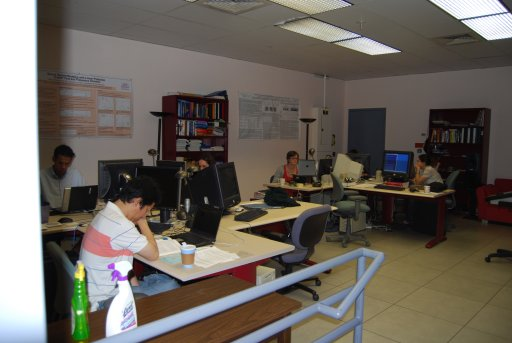

Labs of MIR - LabROSA
Last month I had a series of blog posts about the offices of music 2.0,
where I featured photos of the various companies in the music 2.0
space. This month I'm featuring photos of the various music
information retrieval labs that are the brains behind music 2.0
We start off with LabROSA - The Laboratory for the Recognition and Organization of Speech and Audio, which is at Columbia University and run by Dan Ellis. Dan and his group are behind a number fundamental MIR papers including one of my favorites: Toward evaluation techniques for music similarity. LabROSA also supplies some excellent datasets including the famous uspop2002. I've met a few of the LabRosa members at various conferences and seminars - I've always been impressed by the quality of the researchers at LabRosa.
LabRosa and Columbia University is in the heart of NYC - the location of the University and its architecture make it a very unique place:
In the heart of the lab, we find Dan Ellis, showing off a little audio player - I'm sure he's trying to figure out how to get the earth mover's distance algorithm to run in a millisecond on that device.
Here's
a wide shot of the lab - everyone is hard at work. But one wonders why
the special need for Lysol? The lab has a bit of a dungeonesque quality
to it, no windows in view, industrial railings, fluorescent lighting.

Here are some happy researchers - mac laptops, windows workstations, headphones, research posters ...

Here's Graham at work on his mac laptop. Poor Graham looks like he's sitting in the doorway.

And the storage end of the lab:

And here's the happy team:


{kind=link}
{kind=link}
btw, if you only do one MIR research lab per week the series will probably take more than a year :-)
Posted by elias on July 23, 2007 at 09:04 PM EDT #